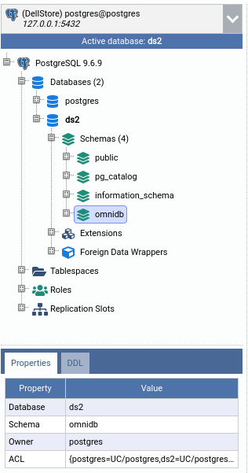
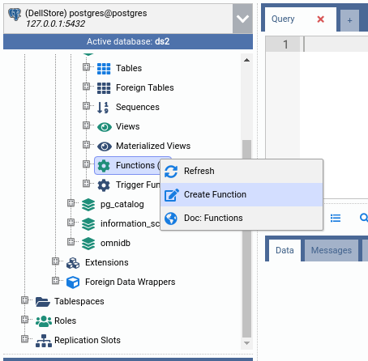
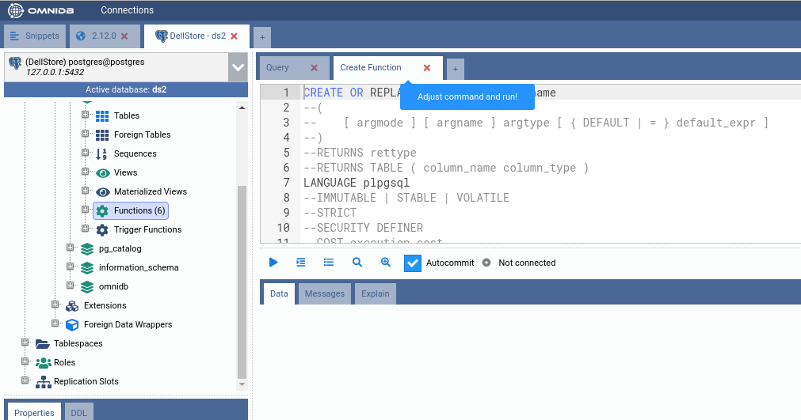
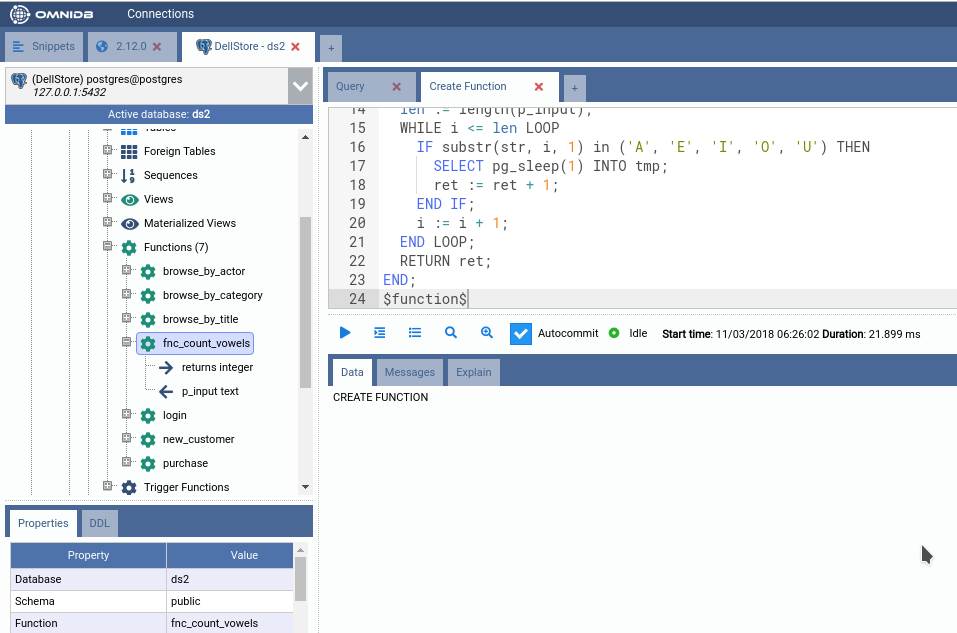
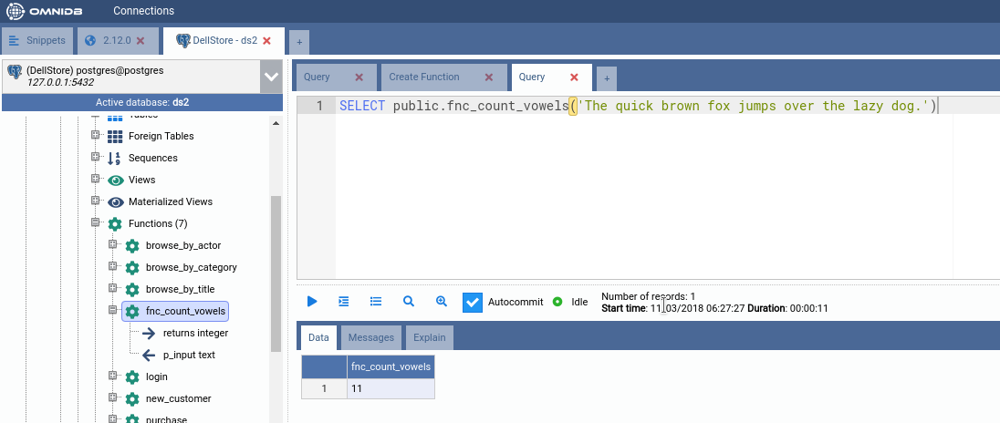

PL/pgSQL-Funktionen schreiben
Einführung
PostgreSQL ist mehr als nur ein RDBMS. Es ist eine Entwicklungsplattform. Es bietet eine sehr leistungsfähige und flexible Programmiersprache namens PL/pgSQL. Mit dieser Sprache können Sie Ihre eigenen benutzerdefinierten Funktionen schreiben, um Abstraktionsebenen und prozedurale Berechnungen zu erreichen, die mit einfachem SQL nur schwer zu realisieren wären (und manchmal ohne Kontextwechsel mit der Anwendung unmöglich sind).

Funktionen schreiben
Klicken Sie im Schema public mit der rechten Maustaste auf den Knoten Functions und dann auf Create Function. Es öffnet sich ein innerer Tab SQL Query, der bereits eine SQL-Vorlage enthält, die Ihnen hilft, Ihre erste PL/pgSQL-Funktion zu erstellen.


Sie können in der PostgreSQL-Dokumentation nachschlagen, wie man benutzerdefinierte Funktionen schreibt. Klicken Sie einfach mit der rechten Maustaste auf den Knoten Functions und dann auf Doc: Functions — die entsprechende PostgreSQL-Dokumentationsseite öffnet sich in Ihrem Webbrowser (dem Standardbrowser des Systems in der Desktop-App oder einem neuen Tab beim Betrieb als browserbasierter OmniDB Server).
Ersetzen wir nun diese SQL-Vorlage vollständig durch den folgenden Quellcode:
CREATE OR REPLACE FUNCTION public.fnc_count_vowels (p_input text)
RETURNS integer LANGUAGE plpgsql AS
$function$
DECLARE
str text;
ret integer;
i integer;
len integer;
BEGIN
str := upper(p_input);
ret := 0;
i := 1;
len := length(p_input);
WHILE i <= len LOOP
IF substr(str, i, 1) in ('A', 'E', 'I', 'O', 'U') THEN
ret := ret + 1;
END IF;
i := i + 1;
END LOOP;
RETURN ret;
END;
$function$
Dies erstellt eine Funktion namens fnc_count_vowels im Schema public. Diese Funktion nimmt ein Text-Argument namens p_input entgegen und zählt, wie viele Vokale in diesem String enthalten sind. Anschließend wird diese Anzahl zurückgegeben.
Um die Funktion zu erstellen, führen Sie den Befehl im inneren Tab SQL Query aus. Bei Erfolg erscheint die Funktion unter dem Baumknoten Functions (Sie können ihn durch Rechtsklick und Klicken auf Refresh aktualisieren). Wenn Sie den Funktionsknoten ebenfalls aufklappen, sehen Sie seinen Rückgabetyp und seine Argumente.

Lassen Sie uns nun diese neue Funktion zum ersten Mal ausführen. Öffnen Sie einen einfachen inneren Tab SQL Query und führen Sie die folgende SQL-Abfrage aus:
SELECT public.fnc_count_vowels('The quick brown fox jumps over the lazy dog.')

Beachten Sie, wie die Abfrage einen einzelnen Wert zurückgibt, der die Anzahl der Vokale im Text enthält.
Durch Rechtsklick auf den Funktionsknoten sehen Sie Aktionen zum Bearbeiten, Auswählen und Löschen. Wie Sie wahrscheinlich vermuten, öffnet jede Aktion innere Tabs SQL Query mit praktischen SQL-Vorlagen.